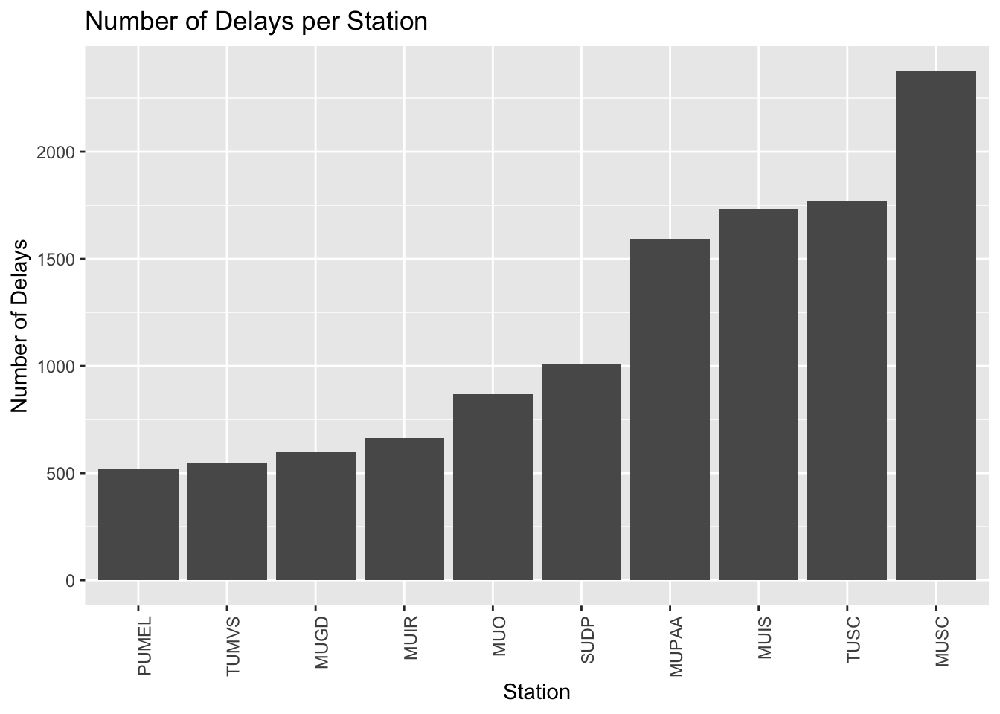
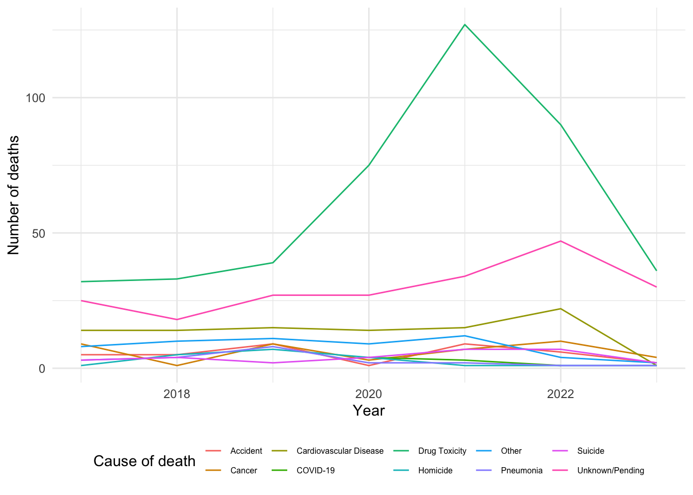

#install.packages("opendatatoronto")minipaper2-opendatatoronto
Figure 1 testestestestes ## Quarto
Quarto enables you to weave together content and executable code into a finished document. To learn more about Quarto see https://quarto.org.
Running Code
When you click the Render button a document will be generated that includes both content and the output of embedded code. You can embed code like this:
library(dplyr)
Attaching package: 'dplyr'The following objects are masked from 'package:stats':
filter, lagThe following objects are masked from 'package:base':
intersect, setdiff, setequal, unionlibrary(knitr)
library(opendatatoronto)
library(tidyverse)── Attaching core tidyverse packages ──────────────────────── tidyverse 2.0.0 ──
✔ forcats 1.0.0 ✔ readr 2.1.4
✔ ggplot2 3.4.3 ✔ stringr 1.5.0
✔ lubridate 1.9.2 ✔ tibble 3.2.1
✔ purrr 1.0.2 ✔ tidyr 1.3.0── Conflicts ────────────────────────────────────────── tidyverse_conflicts() ──
✖ dplyr::filter() masks stats::filter()
✖ dplyr::lag() masks stats::lag()
ℹ Use the conflicted package (<http://conflicted.r-lib.org/>) to force all conflicts to become errorslibrary(purrr)
library(ggplot2)
packages <- list_packages(limit = 10)
ttc_packages <- search_packages("ttc")
ttc_delay_packages <- search_packages("TTC Subway Delay")
ttc_delay_resources <- ttc_delay_packages %>%
list_package_resources()
ttc_delay_statistics <- ttc_delay_resources %>%
slice(5) %>%
get_resource()
ttc_tibble <- map_dfr(ttc_delay_statistics, ~tibble(
station = .x$Station,
code = .x$Code,
min_delay = .x$`Min Delay`
))
ttc_tibble# A tibble: 20,737 × 3
station code min_delay
<chr> <chr> <dbl>
1 SHEPPARD WEST STATION MUATC 10
2 DUNDAS STATION MUNCA 0
3 MUSEUM STATION MUSC 0
4 BAY LOWER EUOE 0
5 MUSEUM STATION MUO 6
6 BLOOR DANFORTH SUBWAY MUGD 0
7 KIPLING STATION MUSAN 3
8 UNION STATION MUIS 0
9 COLLEGE STATION SUDP 7
10 KIPLING STATION SUDP 0
# ℹ 20,727 more rowsttc_tibble%>%filter(min_delay > 0)# A tibble: 7,168 × 3
station code min_delay
<chr> <chr> <dbl>
1 SHEPPARD WEST STATION MUATC 10
2 MUSEUM STATION MUO 6
3 KIPLING STATION MUSAN 3
4 COLLEGE STATION SUDP 7
5 WARDEN STATION MUI 3
6 DONLANDS STATION TUNOA 4
7 KEELE STATION TUNOA 4
8 DONLANDS STATION TUNOA 4
9 KENNEDY SRT STATION ERTC 7
10 VICTORIA PARK STATION EUDO 6
# ℹ 7,158 more rowsstation_delays <- ttc_tibble%>%
group_by(code) %>%
summarise(Delay_Count = n())%>%
ungroup() %>%
top_n(10, Delay_Count) %>%
arrange(Delay_Count)
# Plot the histogram
ggplot(station_delays, aes(x = reorder(code, Delay_Count), y = Delay_Count)) +
geom_col() +
theme(axis.text.x = element_text(angle = 90, hjust = 1)) +
labs(title = "Number of Delays per Station", x = "Station", y = "Number of Delays")
library(reprex)knitr::opts_chunk$set(echo = TRUE)

glance_data <- head(analysis_data, n=10)
glance_data %>% kable(format = “latex”, caption = “A Glance at Cleaned Analysis Data”, booktabs = TRUE) %>% kable_styling(latex_options = c(“striped”, “hold_position”))